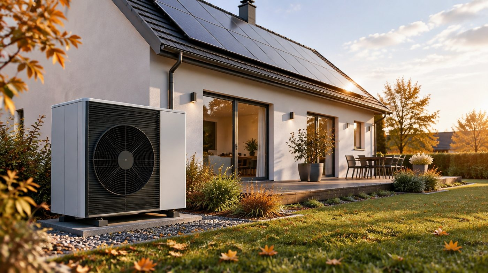

Kurz zusammengefasst
- Seit dem 29. Juli 2026 gilt das Gebäudemodernisierungsgesetz (GModG) – die 65-Prozent-Regel des GEG (§ 71) ist gestrichen.
- Statt fester Vorgaben gilt Technologieoffenheit: neue Öl- und Gasheizungen sind wieder erlaubt, müssen aber ab 2029 steigende Bio-Anteile nutzen; ab 2045 sind nur noch klimaneutrale Brennstoffe zulässig.
- Für Verkäufer:innen bleibt entscheidend: der Energieausweis ist weiter Pflicht, und die Energieeffizienz prägt den Wert.
Inhaltsverzeichnis
Kaum ein Gesetz hat Eigentümer:innen in den letzten Jahren so verunsichert wie das „Heizungsgesetz" – auch viele, mit denen ich hier in Bannewitz und Umgebung spreche. Jetzt ist es Geschichte – zumindest in seinem umstrittensten Teil. Ich erkläre Ihnen in Ruhe, was das neue Gebäudemodernisierungsgesetz wirklich bringt, was davon Sie betrifft und was Sie getrost gelassen sehen dürfen. Ohne Panikmache, ohne Fachchinesisch.
Heizungsgesetz adé – was gerade passiert ist
Das „Heizungsgesetz" war nie ein eigenes Gesetz, sondern das Herzstück des Gebäudeenergiegesetzes (GEG) aus der Zeit der Ampel-Koalition – vor allem die Pflicht, dass jede neue Heizung zu mindestens 65 Prozent mit erneuerbaren Energien laufen muss. Genau dieser Teil ist jetzt gefallen.
Der Ablauf in Kürze: Das Bundeskabinett hat die Reform am 13. Mai 2026 beschlossen, der Bundestag hat sie am 10. Juli 2026 verabschiedet, und seit dem 29. Juli 2026 ist das Gebäudemodernisierungsgesetz (GModG) in Kraft. Der § 71 GEG mit der 65-Prozent-Regel und die Beratungspflicht vor dem Einbau fossiler Heizungen sind gestrichen. Das GEG als Rahmen für energetische Standards bleibt bestehen – das gefürchtete Heizungs-Kapitel aber nicht.
Kurz gesagt: Aus Zwang wird Wahlfreiheit.
GEG und GModG im direkten Vergleich
Am schnellsten sehen Sie den Unterschied in der Gegenüberstellung. (Stand: September 2026 – einige Detailregelungen werden bis Ende 2026 noch konkretisiert.)
| Thema | GEG „Heizungsgesetz" (bis 2026) | Gebäudemodernisierungsgesetz (ab 29.07.2026) |
|---|---|---|
| 65-%-Regel für neue Heizungen | Pflicht: mind. 65 % erneuerbare Energien (§ 71) | Gestrichen. Technologieoffenheit – Sie wählen selbst |
| Neue Öl-/Gasheizung | Nur eingeschränkt, an Bedingungen geknüpft | Wieder erlaubt (Neueinbau & Weiterbetrieb) |
| Kopplung an kommunale Wärmeplanung | Ja, mit Fristen (2026 / 2028) | Kopplung entfällt (Heizungspflicht ist weg) |
| Beratungspflicht vor Einbau | Ja (§ 71b–72) | Abgeschafft (Beratung weiter empfohlen) |
| Weg zum Klimaschutz | Quoten- und Vorgabenlogik | Schrittweise Bio-Anteile („Biotreppe") + Ziel 2045 |
| Bio-Anteil bei fossilen Heizungen | – | 2029: 10 % → 2030: 15 % → 2035: 30 % → 2040: 60 % |
| Langfrist-Ziel | Klimaneutralität 2045 | Klimaneutrale Brennstoffe ab 2045 |
| Förderung | KfW-Zuschüsse (Grundförderung + Boni) | Neu gestaffelt nach Einkommen (ab 21.07.2026) |
| Energieausweis beim Verkauf | Pflicht | Weiter Pflicht (unverändert) |
Die gestaffelten Bio-Anteile („Biotreppe") und die ab 2028 geplante Grüngasquote werden im Detail bis Ende 2026 noch geregelt – Zahlen können sich also noch verschieben.
Müssen Sie Ihre Heizung austauschen?
Die kurze, beruhigende Antwort: Nein. Ihre bestehende Öl- oder Gasheizung dürfen Sie weiter betreiben und im Reparaturfall instand setzen. Und anders als unter dem GEG dürfen Sie sogar wieder eine neue Gas- oder Ölheizung einbauen, wenn Sie das möchten.
Der Haken mit Ansage: Fossile Heizungen werden über die Jahre teurer im Betrieb – zum einen über den steigenden CO₂-Preis, zum anderen, weil neue Anlagen ab 2029 wachsende Anteile biogener Brennstoffe nutzen müssen. Und spätestens 2045 müssen alle Brennstoffe klimaneutral sein. Wer heute neu baut oder saniert, sollte das mitdenken – eine Wärmepumpe, ein Fernwärmeanschluss oder eine Hybridlösung bleiben deshalb für viele die zukunftssicherere Wahl. Wie stark die Energieeffizienz den Verkaufswert beeinflusst, lesen Sie weiter unten.
Was sich bei der Förderung ändert
Auch die Förderung wurde umgebaut (seit 21. Juli 2026). Sie ist jetzt stärker nach Einkommen gestaffelt: Wer weniger verdient, bekommt einen höheren Bonus. Für einen klimafreundlichen Heizungstausch gibt es weiterhin einen Zuschuss, ergänzt um Boni je nach Haushaltseinkommen und einen Kinderzuschlag. Die genauen Sätze und Deckel können sich noch anpassen – vor einer Investition lohnt daher ein Blick in die aktuelle Förderrichtlinie oder ein Gespräch mit einer Energieberatung.
Was heißt das für Ihren Verkauf?
Jetzt der Teil, der mich als Maklerin am meisten interessiert – und Sie als Eigentümer:in wahrscheinlich auch: Was heißt das für den Wert und den Verkauf Ihrer Immobilie?
Meine ehrliche Einschätzung: Am grundsätzlichen Bild ändert sich wenig. Die neue Technologieoffenheit nimmt etwas Druck aus dem Thema – niemand wird mehr zum sofortigen Heizungstausch gezwungen. Aber der Markt bewertet weiterhin knallhart nach Energieeffizienz. Ein gut gedämmtes Haus mit moderner Heizung erzielt bessere Preise und verkauft sich schneller als ein Energiefresser mit alter Ölheizung – daran ändert auch das GModG nichts. Und der Energieausweis bleibt beim Verkauf Pflicht, inklusive der Kennwerte, die Sie in Anzeigen angeben müssen. Mehr dazu lesen Sie im Beitrag Energieausweis beim Hausverkauf.
Wie stark das wiegt, zeigt eine Auswertung von immowelt (2025): Bei Häusern liegen zwischen der besten Energieeffizienzklasse (A+) und der schlechtesten (H) rund 30 Prozentpunkte Preisunterschied. Ein Haus mit schwacher Energiebilanz ist deshalb nicht unverkäuflich – der Zustand gehört nur ehrlich in die Preisfindung, denn Käufer:innen rechnen mögliche Modernisierungskosten heute selbstverständlich ein.
Für Verkäufer:innen in Bannewitz und Umgebung heißt das: Die energetische Qualität Ihres Hauses ehrlich einordnen, die Unterlagen bereithalten – und den Rest übernehme ich gern gemeinsam mit Ihnen.
Worauf beide Seiten achten sollten
Die Gesetzeslage ist entspannter geworden – „egal" ist die Heizung beim Immobiliengeschäft aber nie. Kurz und ehrlich, für beide Seiten:
Wenn Sie verkaufen, achten Sie in jedem Fall auf:
- Ehrliche Angaben zur Heizung – Typ, Energieträger, Baujahr und Zustand gehören offen auf den Tisch und in die Unterlagen.
- Einen gültigen Energieausweis – bleibt Pflicht, und die Kennwerte müssen Sie schon in der Anzeige nennen.
- Bekannte Mängel offenlegen – wer einen defekten Kessel oder eine feuchte Wand verschweigt, haftet trotz „gekauft wie gesehen" (§ 444 BGB). Mehr dazu im Beitrag Worauf beim Kaufvertrag achten.
Wenn Sie kaufen, achten Sie in jedem Fall auf:
- Alter und Typ der Heizung – wie lange läuft sie noch, und was würde ein späterer Austausch kosten?
- Die laufenden Kosten – bei Öl und Gas steigen sie über den CO₂-Preis und die ab 2029 wachsenden Bio-Anteile.
- Die Energieausweis-Kennwerte – sie verraten mehr über die künftigen Nebenkosten als jeder schöne Prospekt. Prüfen Sie eine mögliche Förderung für spätere Modernisierungen am besten gleich mit.
Mein Rat an beide Seiten: Rechnen Sie die Heizung realistisch in den Preis ein – dann gibt es später keine bösen Überraschungen.
Mein Fazit: Ruhe statt Panik
Das Gebäudemodernisierungsgesetz nimmt viel von der Aufregung heraus, die das Heizungsgesetz ausgelöst hat. Kein Zwang, kein Stichtag, an dem plötzlich alles anders ist – dafür mehr Wahlfreiheit und ein längerer, planbarer Weg Richtung Klimaneutralität. Für die meisten Eigentümer:innen heißt das vor allem: durchatmen, informiert bleiben und Entscheidungen in Ruhe treffen.
Und wenn Sie ohnehin über einen Verkauf nachdenken: Lassen Sie uns über den Zustand und den realistischen Wert Ihrer Immobilie sprechen – ehrlich und unverbindlich.
Quellen
Bundesministerium (offizielles GModG-Portal) – Inhalt & Chronologie: gmodg.bund.de.
Bundesregierung – „Neues Gebäudemodernisierungsgesetz": bundesregierung.de.
Haufe – „Gebäudemodernisierungsgesetz in Kraft" (Ablauf, § 71 GEG, Biotreppe, Fristen): haufe.de.
Energieeffizienzklasse und Verkaufspreis (rund 30 Prozentpunkte zwischen A+ und H) – immowelt-Pressemitteilung „Preisfaktor Energieeffizienz" (27.03.2025): immowelt.de.
ADAC – „Das ändert das Gebäudemodernisierungsgesetz 2026": adac.de. Stand: September 2026. Dieser Beitrag ist eine allgemeine Orientierung und ersetzt keine Rechts- oder Energieberatung im Einzelfall.


Ihre Immobilie in Bannewitz – jetzt kostenlos bewerten lassen
Unsicher, was die neue Gesetzeslage für Ihr Haus bedeutet? Ich ordne den Zustand ehrlich ein und erstelle Ihnen eine kostenlose, unverbindliche Markteinschätzung – persönlich, lokal und mit echter Marktkenntnis aus Bannewitz.
Ihre Janine Kreiser – Ihre Immobilienexpertin für Bannewitz und Umgebung.